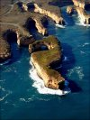
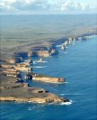
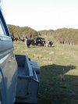
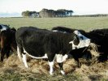

June
- 2nd
- 3rd
- 4th
- 5th
- 6th
- 7th
- 8th
- 9th
- 10th
- 11th
- 12th
- 13th
- 14th
- 15th
- 16th
- 17th
- 18th
- 19th
- 20th
- 21st
- 22nd
- 23rd
- 24th
- 25th
- 26th
- 27th
- 28th
- 29th
- 30th
July
- 1st
- 2nd
- 3rd
- 4th
- 5th
- 6th
- 7th
- 8th
- 9th
- 10th
- 11th
- 12th
- 13th
- 14th
- 15th
- 16th
- 17th
- 18th
- 19th
- 20th
- 21st
- 22nd
- 23rd
- 24th
- 25th
- 26th
- 27th
- 28th
- 29th
- 30th
- 31st
August
It started of with another cloud-free morning, so the mood was set for good. Jason gave us a lift back to the airport and didn't even want to be payed for it.

{kind=link}
According to the weather forecast, Lilydale was foggy and wasn't expected to be clear before one o'clock in the afternoon. Waiting till then would be pushing it as it would take about 2 hours to get into Lilydale and another 1.5 hours back to King Island. While waiting and having a think of what to do, Klaus had a talk to Peter Savey, an instructor out of Warrnambool, about the planned route outside controlled airspace to Lilydale. Peter offered that we could borrow life vests from him instead. We promised to send the vests back by mail when we return from Tassie. This saved us several hours of flight into Melbourne and back. Thank you very much Peter!

{kind=link}
David Brewster is the guy in charge of the refuelling on King Island aerodrome. Klaus had called him earlier to ask whether fuel was available, which it was. In addition he offered to give us a lift into town once we got to 'King' as there is only one taxi on the island, which 
{kind=link}

{kind=link}
At dusk we went to Grassy to see penguins at a place that David had told us about. Unfortunately we got there a bit late to see them get out of the water, but we sure enough saw (and heard!) a lot of penguins on land. Cute little animals (no pictures - we didn't want to scare the little cuties using flash!).
Back in Currie we had dinner with David and his girl friend Sally at the local pub/restaurant. We had a great time. It was first then that we found out that David not only is the 'refueller' and a farmer, but actually also is the mayor of King Island.
What a great day!